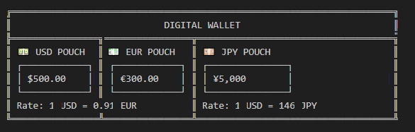
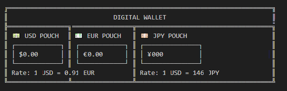

Finance
Financial applications typically need functionality like secure storage for storing balances and transaction history, networking for interacting with blockchain (1) or other financial APIs, cryptography for secure signing and verifying transactions, and configuration management for handling user settings.
Of course, we should add highly accurate numerical calculations as an essential feature.
Libraries
Many Boost libraries should assist you in building a finance app, here are some to consider:
-
Boost.Uuid : A useful utility library for generating unique identifiers.
-
Boost.Serialization : To save and restore data.
-
Boost.Hash2 : Boost.Hash2 : Hashing algorithms play a crucial role in financial applications by ensuring data integrity, authentication, and security in various transactions and records. Hashing enables fingerprinting of transactions, invoices, and records to detect duplicate or modified entries. Boost.Hash2 is a new library, first available in Boost version 1.88.
-
Boost.Interprocess : Allows for shared memory communication and synchronization between processes. It’s useful for creating shared memory regions, handling inter-process communication, managing shared objects, and synchronizing processes.
-
Boost.Multiprecision : For extended precision arithmetic.
-
Boost.Asio : If your app has network-related features, and its hard to envisage a finance app that does not, this library provides a consistent asynchronous model for network programming.
-
Boost.Beast : Built on top of Boost.Asio this library provides implementations of HTTP and WebSocket. These are common protocols for network programming.
-
Boost.Json : An efficient library for parsing, serializing, and manipulating JSON data. This is useful specifically in client-server communication and web services. Also, if you are working with large JSON payloads, there is support for incremental parsing, so you can feed data to the parser as it arrives over the network.
-
Boost.ProgramOptions : Allows program options to be defined, with types and default values, and their values to be retrieved from the command line, from config files, and programmatically.
-
Boost.DateTime or Boost.Chrono: If you need to timestamp changes or edits, or if you’re implementing a version history feature, these libraries provide the required functions.
-
Boost.PropertyTree : Provides a hierarchical data structure for representing and manipulating structured data, such as XML, JSON, INI, or property list formats. You can use it to parse, validate, and sanitize input data in various formats, ensuring that it conforms to expected schema or constraints before further processing.
- Notes
-
The code in this tutorial was written and tested using Microsoft Visual Studio (Visual C++ 2022, Console App project) with Boost version 1.88.0.
In Visual Studio, the C++ Language Standard (in the Project Properties C++ Language section) has been set to
ISO C17 Standard (/std:c17). The libsodium library has been installed with the following Git Bash commands:git clone https://github.com/Microsoft/vcpkg.git cd vcpkg ./bootstrap-vcpkg.bat ./vcpkg install libsodium ./vcpkg integrate installFinally, the location of the libsodium headers has been added to the Additional Include Libraries section of the Project Properties.
Signing Transactions
Encrypting and securing transactions, one of the first tasks developers of a financial app should investigate, is a never-ending journey.
Public-key cryptography, also known as asymmetric cryptography, was first conceptualized in the 1970s by Whitfield Diffie and Martin Hellman, who introduced the idea of key pairs — one public and one private — for secure communication. This breakthrough solved a major problem in cryptography: how to securely share encryption keys over an untrusted channel. Shortly after, Rivest, Shamir, and Adleman developed the RSA algorithm, which became one of the earliest widely used public-key systems, relying on the mathematical difficulty of factoring large prime numbers.
As cryptography evolved, new methods based on elliptic curves gained popularity due to their superior security per bit compared to RSA. The ECDSA or Elliptic Curve Digital Signature Algorithm (2) emerged as a widely adopted standard, particularly in financial applications and cryptocurrencies like Bitcoin. However, ECDSA has limitations in security and performance, leading to the development of EdDSA or Edwards-curve Digital Signature Algorithm (3), which offers improved speed, security, and resistance to side-channel attacks. The most well-known variant, Ed25519, is now favored in many modern cryptographic applications for its efficiency and robust security guarantees.
If you are writing a serious financial app, then you could also research Schnorr Signatures. Unlike ECDSA, where an attacker can slightly modify a valid signature to create a new one, Schnorr Signatures prevent this, improving security in blockchain applications. And in addition, ECDSA (and all elliptic curve cryptography) and possibly Ed25519 can be broken by large-scale quantum computers - Post-Quantum Cryptography (PQC) is designed to resist this by replacing these schemes with lattice-based, hash-based, multivariate, and code-based cryptography - and is a currently developing story!
The following sample shows signing of a transaction, using Ed25519 public/private key signing with the libsodium library, supported by Boost.Uuid and Boost.Serialization.
#include <sodium.h>
#include <boost/archive/text_oarchive.hpp>
#include <boost/archive/text_iarchive.hpp>
#include <boost/serialization/string.hpp>
#include <boost/uuid/uuid.hpp>
#include <boost/uuid/uuid_generators.hpp>
#include <boost/uuid/uuid_io.hpp>
#include <iostream>
#include <sstream>
// Transaction Structure
struct Transaction {
std::string sender;
std::string receiver;
double amount;
boost::uuids::uuid tx_id;
template<class Archive>
void serialize(Archive& ar, const unsigned int) {
ar& sender;
ar& receiver;
ar& amount;
ar& tx_id;
}
};
// Serialization Utility
std::string serialize_transaction(const Transaction& tx) {
std::ostringstream oss;
boost::archive::text_oarchive oa(oss);
oa << tx;
return oss.str();
}
// Signing and Verifying
bool sign_transaction(const std::string& serialized_tx,
std::array<unsigned char, crypto_sign_BYTES>& signature,
const std::array<unsigned char, crypto_sign_SECRETKEYBYTES>& sk) {
return crypto_sign_detached(signature.data(),
nullptr,
reinterpret_cast<const unsigned char*>(serialized_tx.data()),
serialized_tx.size(),
sk.data()) == 0;
}
bool verify_transaction(const std::string& serialized_tx,
const std::array<unsigned char, crypto_sign_BYTES>& signature,
const std::array<unsigned char, crypto_sign_PUBLICKEYBYTES>& pk) {
return crypto_sign_verify_detached(signature.data(),
reinterpret_cast<const unsigned char*>(serialized_tx.data()),
serialized_tx.size(),
pk.data()) == 0;
}
// Main Flow
int main() {
if (sodium_init() < 0) {
std::cerr << "Failed to initialize libsodium\n";
return 1;
}
// Key pair
std::array<unsigned char, crypto_sign_PUBLICKEYBYTES> pk;
std::array<unsigned char, crypto_sign_SECRETKEYBYTES> sk;
crypto_sign_keypair(pk.data(), sk.data());
// Create a sample transaction
Transaction tx{
"alice@example.com",
"bob@example.com",
100.5,
boost::uuids::random_generator()()
};
// Serialize the transaction
std::string serialized = serialize_transaction(tx);
// Sign it
std::array<unsigned char, crypto_sign_BYTES> signature;
if (!sign_transaction(serialized, signature, sk)) {
std::cerr << "Signing failed.\n";
return 1;
}
std::cout << "Transaction signed with Ed25519.\n";
std::cout << "Transaction ID: " << tx.tx_id << "\n";
// Verify the signature
if (verify_transaction(serialized, signature, pk)) {
std::cout << "Signature verified\n";
}
else {
std::cout << "Signature verification failed\n";
}
return 0;
}Run the program and you should get a verified signature:
Transaction signed with Ed25519.
Transaction ID: 77f104be-815d-4800-b424-244d0e8ee7c0
Signature verifiedSample Wallet with Ed25519 Signing
Let’s start with a simple wallet that enables transactions from a sender to a receiver, using Ed25519 signing as before.
#pragma once
#include <sodium.h>
#include <iostream>
#include <fstream>
#include <sstream>
#include <boost/uuid/uuid.hpp>
#include <boost/uuid/random_generator.hpp>
#include <boost/uuid/uuid_io.hpp>
#include <boost/serialization/string.hpp>
#include <boost/serialization/array.hpp>
#include <boost/archive/text_oarchive.hpp>
#include <boost/archive/text_iarchive.hpp>
class Wallet {
public:
Wallet() {
crypto_sign_keypair(public_key.data(), private_key.data());
id = boost::uuids::to_string(boost::uuids::random_generator()());
}
std::string get_id() const { return id; }
const std::array<unsigned char, crypto_sign_PUBLICKEYBYTES>& pubkey() const { return public_key; }
const std::array<unsigned char, crypto_sign_SECRETKEYBYTES>& privkey() const { return private_key; }
private:
std::string id;
std::array<unsigned char, crypto_sign_PUBLICKEYBYTES> public_key{};
std::array<unsigned char, crypto_sign_SECRETKEYBYTES> private_key{};
};
struct Transaction {
std::string sender_id;
std::string recipient_id;
double amount;
std::array<unsigned char, crypto_sign_BYTES> signature{};
Transaction() = default;
Transaction(const std::string& sender, const std::string& recipient, double amt)
: sender_id(sender), recipient_id(recipient), amount(amt) {
}
std::string serialize_data() const {
std::ostringstream oss;
oss << sender_id << "|" << recipient_id << "|" << std::fixed << std::setprecision(2) << amount;
return oss.str();
}
void sign(const std::array<unsigned char, crypto_sign_SECRETKEYBYTES>& sk) {
std::string msg = serialize_data();
crypto_sign_detached(signature.data(),
nullptr,
reinterpret_cast<const unsigned char*>(msg.data()),
msg.size(),
sk.data());
}
bool verify(const std::array<unsigned char, crypto_sign_PUBLICKEYBYTES>& pk) const {
std::string msg = serialize_data();
return crypto_sign_verify_detached(signature.data(),
reinterpret_cast<const unsigned char*>(msg.data()),
msg.size(),
pk.data()) == 0;
}
private:
friend class boost::serialization::access;
template<class Archive>
void serialize(Archive& ar, const unsigned int) {
ar& sender_id;
ar& recipient_id;
ar& amount;
ar& signature;
}
};
int main() {
if (sodium_init() < 0) {
std::cerr << "libsodium initialization failed\n";
return 1;
}
Wallet sender;
Wallet recipient;
std::cout << "Created wallets:\n";
std::cout << "Sender ID: " << sender.get_id() << "\n";
std::cout << "Recipient ID: " << recipient.get_id() << "\n";
Transaction tx(sender.get_id(), recipient.get_id(), 123.45);
tx.sign(sender.privkey());
if (tx.verify(sender.pubkey())) {
std::cout << "Signature verified successfully.\n";
}
else {
std::cout << "Signature verification failed.\n";
}
// Block the write code to ensure the write buffers are flushed
{
std::ofstream ofs("transactions.dat");
boost::archive::text_oarchive oa(ofs);
oa << tx;
}
std::cout << "Transaction saved.\n";
Transaction loaded_tx;
std::ifstream ifs("transactions.dat");
boost::archive::text_iarchive ia(ifs);
ia >> loaded_tx;
std::cout << "Loaded transaction: " << loaded_tx.sender_id << " -> "
<< loaded_tx.recipient_id << ", $" << loaded_tx.amount << "\n";
}A sample run of the program might be:
Created wallets:
Sender ID: 782ded6c-4eda-47d6-a62c-d87bcf2c8f79
Recipient ID: 48ff8851-f638-4bfc-ad39-33547d82fbcb
Signature verified successfully.
Transaction saved.
Loaded transaction: 782ded6c-4eda-47d6-a62c-d87bcf2c8f79 -> 48ff8851-f638-4bfc-ad39-33547d82fbcb, $123.45Wallet with Foreign Currency Exchange
For a more functional wallet, we should add foreign currency exchange. In this sample the rates are hard-coded, however the Next Steps section includes information on how to access live currency exchange rates.
Sender:

Recipient:

#include <sodium.h>
#include <iostream>
#include <fstream>
#include <sstream>
#include <boost/uuid/uuid.hpp>
#include <boost/uuid/random_generator.hpp>
#include <boost/uuid/uuid_io.hpp>
#include <boost/serialization/string.hpp>
#include <boost/serialization/map.hpp>
#include <boost/archive/text_oarchive.hpp>
#include <boost/archive/text_iarchive.hpp>
enum class Currency { USD, EUR, JPY };
inline std::string to_string(Currency c) {
switch (c) {
case Currency::USD: return "USD";
case Currency::EUR: return "EUR";
case Currency::JPY: return "JPY";
}
return "UNK";
}
inline Currency from_string(const std::string& s) {
if (s == "USD") return Currency::USD;
if (s == "EUR") return Currency::EUR;
if (s == "JPY") return Currency::JPY;
throw std::runtime_error("Unknown currency");
}
static const std::map<std::pair<Currency, Currency>, double> exchange_rates = {
{{Currency::USD, Currency::EUR}, 0.91},
{{Currency::EUR, Currency::USD}, 1.10},
{{Currency::USD, Currency::JPY}, 146.0},
{{Currency::JPY, Currency::USD}, 0.0068},
{{Currency::EUR, Currency::JPY}, 160.0},
{{Currency::JPY, Currency::EUR}, 0.0062}
};
class Wallet {
public:
Wallet(double usd, double eur, double jpy) {
crypto_sign_keypair(public_key.data(), private_key.data());
id = boost::uuids::to_string(boost::uuids::random_generator()());
balances[Currency::USD] = usd;
balances[Currency::EUR] = eur;
balances[Currency::JPY] = jpy;
}
void credit(Currency cur, double amt) {
balances[cur] += amt;
}
bool debit(Currency cur, double amt) {
if (balances[cur] >= amt) {
balances[cur] -= amt;
return true;
}
return false;
}
void print_balances() const {
std::cout << "\nBalances for " << id << ":\n";
for (const auto& [cur, val] : balances) {
std::cout << " " << to_string(cur) << ": " << val << "\n";
}
}
std::string get_id() const { return id; }
const std::array<unsigned char, crypto_sign_PUBLICKEYBYTES>& pubkey() const { return public_key; }
const std::array<unsigned char, crypto_sign_SECRETKEYBYTES>& privkey() const { return private_key; }
private:
std::string id;
std::array<unsigned char, crypto_sign_PUBLICKEYBYTES> public_key{};
std::array<unsigned char, crypto_sign_SECRETKEYBYTES> private_key{};
std::map<Currency, double> balances;
};
struct Transaction {
std::string sender_id;
std::string recipient_id;
double amount;
Currency sender_currency;
Currency recipient_currency;
std::array<unsigned char, crypto_sign_BYTES> signature{};
Transaction() = default;
Transaction(const std::string& s, const std::string& r, double amt, Currency scur, Currency rcur)
: sender_id(s), recipient_id(r), amount(amt), sender_currency(scur), recipient_currency(rcur) {
}
std::string serialize_data() const {
std::ostringstream oss;
oss << sender_id << "|" << recipient_id << "|" << std::fixed << std::setprecision(2)
<< amount << "|" << to_string(sender_currency) << "|" << to_string(recipient_currency);
return oss.str();
}
double converted_amount() const {
if (sender_currency == recipient_currency) return amount;
auto it = exchange_rates.find({ sender_currency, recipient_currency });
if (it != exchange_rates.end()) return amount * it->second;
throw std::runtime_error("No exchange rate available.");
}
void sign(const std::array<unsigned char, crypto_sign_SECRETKEYBYTES>& sk) {
std::string msg = serialize_data();
crypto_sign_detached(signature.data(), nullptr,
reinterpret_cast<const unsigned char*>(msg.data()),
msg.size(), sk.data());
}
bool verify(const std::array<unsigned char, crypto_sign_PUBLICKEYBYTES>& pk) const {
std::string msg = serialize_data();
return crypto_sign_verify_detached(signature.data(),
reinterpret_cast<const unsigned char*>(msg.data()),
msg.size(), pk.data()) == 0;
}
private:
friend class boost::serialization::access;
template<class Archive>
void serialize(Archive& ar, const unsigned int) {
ar& sender_id& recipient_id& amount;
std::string scur = to_string(sender_currency);
std::string rcur = to_string(recipient_currency);
ar& scur& rcur;
sender_currency = from_string(scur);
recipient_currency = from_string(rcur);
ar& signature;
}
};
void make_transaction(Wallet &sender, Wallet &recipient, double amount, Currency scur, Currency rcur)
{
Transaction tx(sender.get_id(), recipient.get_id(), amount, scur, rcur);
tx.sign(sender.privkey());
if (tx.verify(sender.pubkey())) {
std::cout << "\nTransaction verified.\n";
if (sender.debit(tx.sender_currency, tx.amount)) {
recipient.credit(tx.recipient_currency, tx.converted_amount());
}
else {
std::cout << "Sender has insufficient funds.\n";
}
}
else {
std::cout << "Transaction verification failed.\n";
}
sender.print_balances();
recipient.print_balances();
}
int main() {
if (sodium_init() < 0) {
std::cerr << "libsodium initialization failed\n";
return 1;
}
Wallet sender = Wallet(500, 300, 5000);
Wallet recipient = Wallet(0, 0, 0);
std::cout << "Created wallets:\n";
std::cout << "Sender ID: " << sender.get_id() << "\n";
std::cout << "Recipient ID: " << recipient.get_id() << "\n";
make_transaction(sender, recipient, 100.0, Currency::EUR, Currency::USD);
make_transaction(sender, recipient, 2500.0, Currency::JPY, Currency::USD);
make_transaction(recipient, sender, 50.0, Currency::USD, Currency::EUR);
return 0;
}- Note
-
Wallets contain three amounts, one for each currency. If a transaction is made from a currency the Wallet does not have enough of, amounts are not transferred from the other currencies to cover it. On receipt of a transaction, the amounts are converted to the specified currency.
Run the program:
Created wallets:
Sender ID: 48b711fd-8197-4e39-bbaf-06e931ab9cc3
Recipient ID: fdda420d-820a-4670-99a9-3320864ef990
Transaction verified.
Balances for 48b711fd-8197-4e39-bbaf-06e931ab9cc3:
USD: 500
EUR: 200
JPY: 5000
Balances for fdda420d-820a-4670-99a9-3320864ef990:
USD: 110
EUR: 0
JPY: 0
Transaction verified.
Balances for 48b711fd-8197-4e39-bbaf-06e931ab9cc3:
USD: 500
EUR: 200
JPY: 2500
Balances for fdda420d-820a-4670-99a9-3320864ef990:
USD: 127
EUR: 0
JPY: 0
Transaction verified.
Balances for fdda420d-820a-4670-99a9-3320864ef990:
USD: 77
EUR: 0
JPY: 0
Balances for 48b711fd-8197-4e39-bbaf-06e931ab9cc3:
USD: 500
EUR: 245.5
JPY: 2500Next Steps
Consider using Boost.Beast to make an HTTP request to a public exchange rate API and fetch live rates for currency conversion. The JSON response can be parsed using Boost.Json.
Consider adding a user interface to the wallet to allow you to make deposits, withdrawals, transfers, and balance checks.
For some ideas on how to expand this app with remote access, refer to the samples in Networking.
Footnotes
(1) Blockchain : A technology that provides a decentralized, tamper-resistant ledger that ensures transparency, security, and trust in digital transactions. By distributing records across a network of nodes and using cryptographic techniques, like hashing and digital signatures, blockchain eliminates the need for intermediaries, reducing fraud and operational costs. Its applications extend beyond cryptocurrencies to areas such as supply chain tracking, smart contracts, secure identity verification, and financial services. The immutability and auditability make it particularly valuable for industries requiring verifiable and trustless interactions, though challenges like scalability and energy consumption remain areas of active development.
(2) ECDSA : An Elliptic Curve Digital Signature Algorithm creates a public and private key pair. ECDSA provides a variant of digital signature algorithms that use elliptic-curve cryptography to provide an additional level of complexity to the private key. However, care should be taken when implementing this algorithm - in particular, high-quality randomness in signatures is an absolutely essential.
(3) Ed25519 : A high-performance, secure, and efficient public-key signature algorithm based on the Edwards-curve Digital Signature Algorithm (EdDSA), specifically designed for the Curve25519 elliptic curve. It offers 128-bit security, is resistant to side-channel attacks, and provides fast signing and verification speeds while maintaining small key and signature sizes (32-byte public keys and 64-byte signatures). Unlike ECDSA, Ed25519 does not require a secure random k value for signing, eliminating a major source of vulnerabilities. Widely adopted in cryptographic protocols like SSH, TLS, and cryptocurrency systems, Ed25519 is favored for its robustness, simplicity, and efficiency in modern security applications.